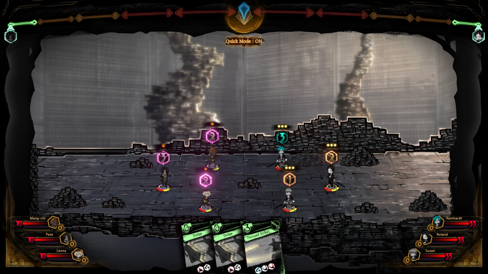
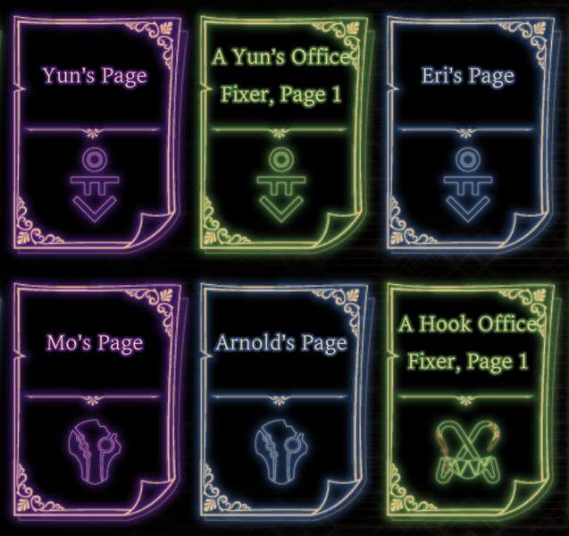
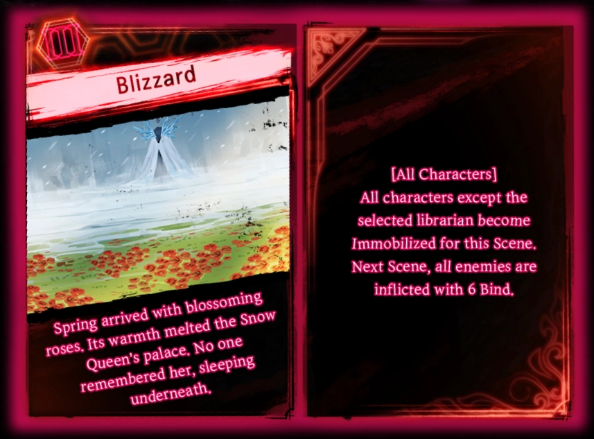

The Combat
The Basics
After preperation is complete, combat will begin for the guests and librarians. At the start of the turn everyone will roll their speed dice, with a higher speed value allowing a character to take action first, and potentially redirect an attack to them if they choose. The type of combat page played also determines who moves when, as mass attacks are played first, followed by ranged pages, and finally melee pages. After speed is rolled for everyone, they will use their personally accumulated light to play their combat pages, and it should be noted that stronger combat pages usually have a higher cost to play. After combat pages are selected, everyone will clash with and attack their opponent until every plyed page has been used. During the battle, everyone will accumulate emotion positive or negative emotion points depending on the outcome of their clash. These points are then added to the emotion level of each side, and the cycle repeats itself.
Key and Combat Pages
The pages a librarian brings into battle determine everything about how they will fight. Each key page has its own health, stagger, and resistances. Health determines how much damage an individual can take before falling, stagger is like health but leaves you open to attacks at increased damage for a turn, and resistances determine if an individual takes more or less damage from a certain damage type. Key pages may also have passive effects, and these can be changed later on to buildcraft the perfect key page. Combat pages are what librarians use to actually recieve guests, and every combat page has an attack type, such as melee. Combat pages also have different types of dice on them that are rolled. Offensive dice are used to attack, defensive are used to defend, and counter dice are played when a recieved attack is unopposed. Click here for a detailed look at key pages. Click here for a detailed look at combat pages.
Abnormality and E.G.O. Pages
Abnormality and E.G.O. pages are game changing pages that are drawn once the emotion level of the librarians is raised enough. Raising emotion levels is as simple as winning or losing clashes win a guests. Once the emotion level reachs III or higher, the player can draw an E.G.O. page, a very strong attack that can inflict a variety of harmful effects on the guests. Abnormality and E.G.O. pages must be unlocked for each floor before they can be used, and they can only be used on the floor that has the corresponding abnormality fight for the page.
